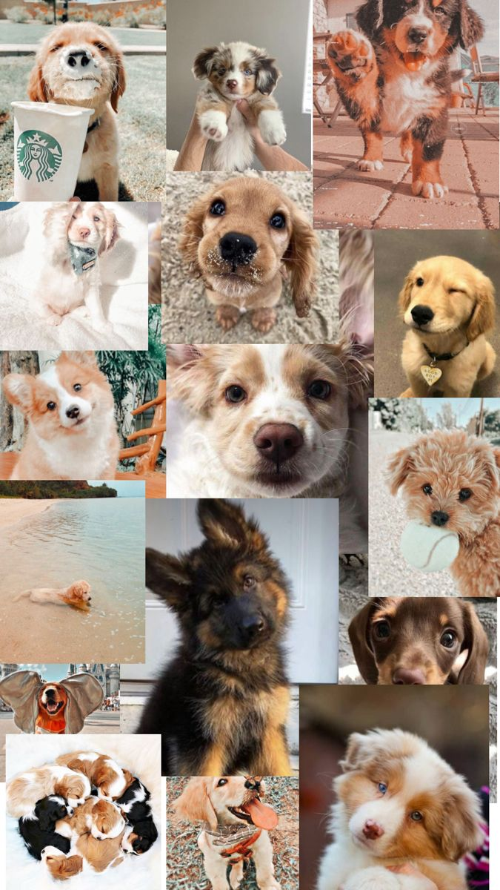

|
Собаки — верные друзья человека.
Это первое животное, которое люди приручили — примерно 15 тысяч лет назад.
Основные факты
- Средняя продолжительность жизни — 10–13 лет.
- У собак очень хороший нюх — в 40 раз лучше человеческого.
- Питаются мясом, крупами, овощами и специальным кормом.
- Нуждаются в ежедневных прогулках.
Уход
Собаке нужны: ошейник, поводок, миска, место для сна и регулярные прогулки 2–3 раза в день.
Раз в год — прививки.
|

|